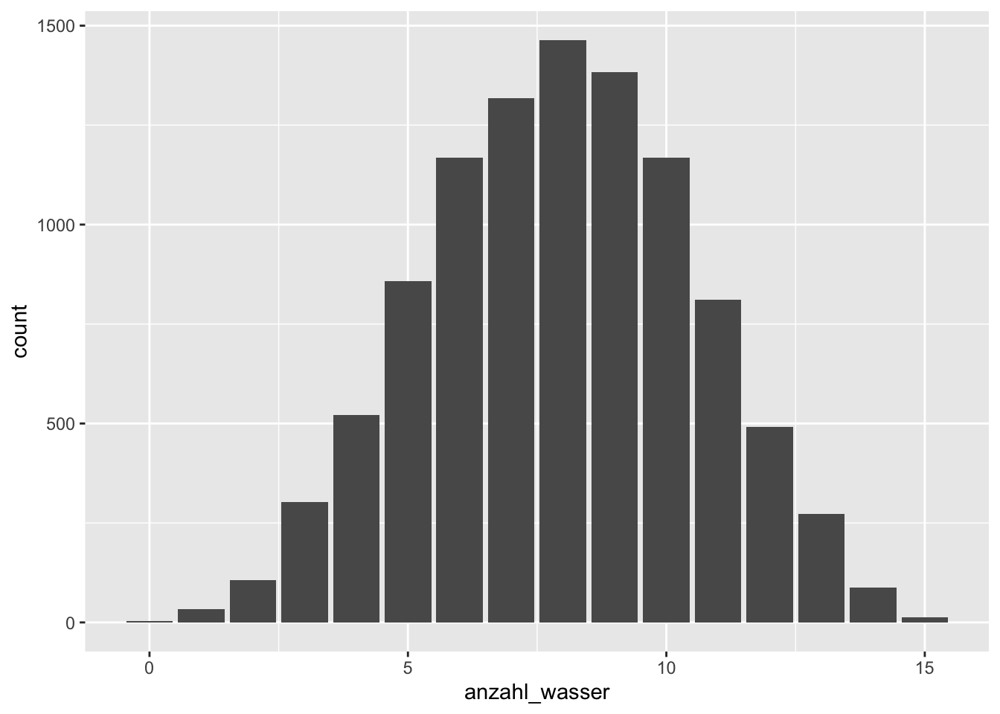

library(tidyverse)rethink3m3
bayes
ppv
probability
computer
Exercise
Nehmen wir an, wir haben 8 (Wasser-)“Treffer” (\(W=8\)) bei 15 Würfen (\(N=15\)) erhalten (wieder im Globusversuch).
Führen Sie einen Posteriori-Prädiktiv-Check durch: Erstellen Sie also eine Posteriori-Prädiktiv-Verteilung (PPV). Mit anderen Worten: Erstellen Sie die Stichprobenverteilung, gemittelt über die Posteriori-Wahrscheinlichkeiten des Wasseranteils \(p\)!
Visualisieren Sie die PPV!
Was ist die Wahrscheinlichkeit laut PPV 8 von 15 Treffer zu erzielen (also 8 Wasser in 15 Würfen)?
Hinweise:
- Berechnen Sie eine Bayes-Box (Gittermethode).
- Verwenden Sie 1000 Gitterwerte.
- Gehen Sie von einem gleichverteilten Prior aus.
- Fixieren Sie die Zufallszahlen mit dem Startwert 42, d.h.
set.seed(42).
Quelle: McElreath, R. (2020). Statistical rethinking: A Bayesian course with examples in R and Stan (2. Aufl.). Taylor and Francis, CRC Press.
Solution
Erstellen wir zuerst wieder die Posteriori-Verteilung für den Globusversuch.
p_grid <- seq( from=0 , to=1 , length.out = 1000) # 1000 Gitterwerte
prior <- rep(1, 1000 ) # Priori-Gewichte
likelihood <- dbinom(8 , size= 15, prob=p_grid )
unstandardisierte_posterior <- likelihood * prior
posterior <- unstandardisierte_posterior / sum(unstandardisierte_posterior)Dann ziehen wir unsere Stichproben daraus:
# um die Zufallszahlen festzulegen, damit alle die gleichen Zufallswerte bekommen:
set.seed(42)
# Stichproben ziehen aus der Posteriori-Verteilung
samples <-
tibble(
p = sample(p_grid , prob=posterior, size=1e4, replace=TRUE))PPV <-
samples %>%
mutate( anzahl_wasser = rbinom(1e4, size = 15, prob = p))Durch prob = p gewichten wir die Wahrscheinlichkeit an den Werten der Posteriori-Verteilung.
So sehen die ersten paar Zeilen von PPV aus:
| p | anzahl_wasser |
|---|---|
| 0.4304304 | 4 |
| 0.5575576 | 11 |
| 0.6516517 | 4 |
| 0.6156156 | 9 |
| 0.6716717 | 6 |
PPV %>%
ggplot() +
aes(x = anzahl_wasser) +
geom_bar()
PPV %>%
count(anzahl_wasser == 8)| anzahl_wasser == 8 | n |
|---|---|
| FALSE | 8536 |
| TRUE | 1464 |
Alternativer R-Code aus dieser Quelle:
w <- rbinom(1e4, size = 15, prob = samples$p)
mean(w == 8)[1] 0.1504Categories:
- bayes
- ppv
- probability